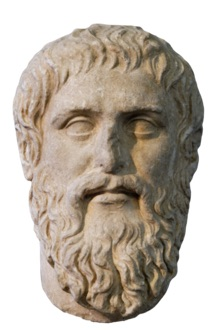

c. 428-348 BC · Athens
← The philosophy map · About Plato
Is it better to know a painful truth, or to live happily with a comfortable illusion?
An online star seems to have a perfect life: beautiful holidays, a happy family, never a bad day. Then you discover that most of the photos are carefully staged. Would you rather not have known? Plato told a famous story about prisoners who see only shadows and believe they are the real world.
Read one part at a time. After each part, close your eyes and answer the question before you check.
Plato was born around 428 BC into a rich family in Athens. As a young man, he became a follower of Socrates. When Socrates was executed in 399 BC, Plato left Athens and travelled for years. He wrote many dialogues, conversations in which Socrates is usually the main speaker. Around 387 BC, he founded the Academy, a school in Athens that lasted for centuries.
What was the Academy?
In his book the Republic, Plato tells a story. Imagine prisoners who have been chained in a dark cave since birth, facing a wall. Behind them burns a fire, and people carry objects past it. The prisoners can only see the shadows of these objects on the wall. They give the shadows names and argue about them. They have never seen anything else, so for them, the shadows are the real world.
Why do the prisoners believe the shadows are real?
One prisoner is set free. At first the fire hurts his eyes. Then he is pulled out of the cave into the sunlight, and slowly he sees real trees, real water and, at last, the sun itself. He understands that the shadows were only copies. He goes back to tell the others, but they laugh at him and refuse to leave. For Plato, our senses show us changing copies; only careful thinking leads us to the perfect, unchanging ideas he called the Forms.
What happens when the freed prisoner goes back into the cave?
Each word is hidden in a sentence. Read it aloud and say what you think the bold word means. Then reveal and compare.
For Plato, the things we see are imperfect, changing copies, and the real things are perfect, unchanging ideas, the Forms. Which of these belong to the world of appearance, and which to reality as Plato saw it? Decide together, then reveal.
Now you: tell the story of the cave to a friend and explain what it means. Speak for about a minute. Use the starters if they help.
A company offers you a machine. You plug in and live a wonderful life: success, love, adventure. It feels completely real, and once you are inside, you will never know it isn't. Or you can stay in the real world, with all its problems and all its truth.
Tap two cards. Use the timer to keep going, and use at least two of the phrases above.
No looking back. Answer from memory first, then check.
Why did the oracle call Socrates the wisest man in Athens?
What did Parmenides argue about change, and why?
From memory, out loud. Then check.
1. What does Plato's story of the cave show?
2. Which philosopher did Plato follow as a young man, and what school did Plato found?
3. What happens when the freed prisoner goes back into the cave?
4. What does 'genuine' mean? Give an example.